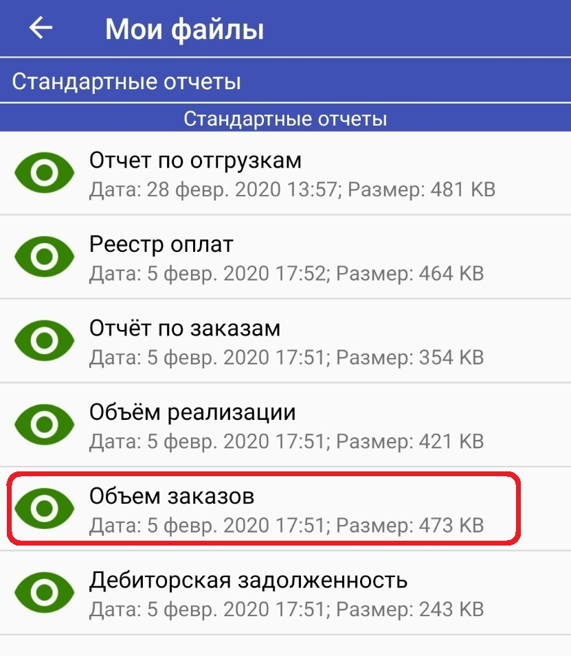
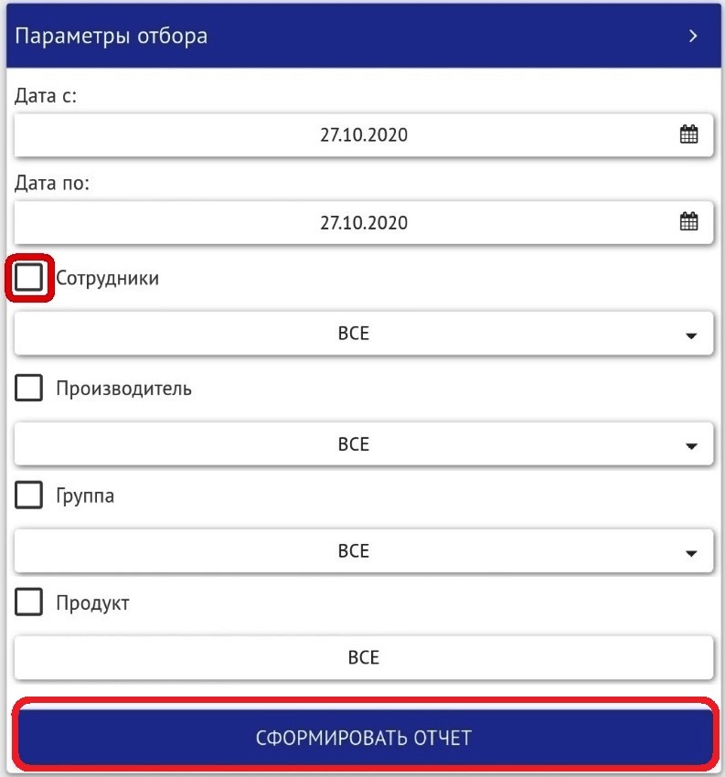

Что бы выделить (подсветить) цветом номенклатуру в КПК используются списки на портале ISellMore.
- портал ISellMore
- меню - Данные
- пункт меню - Списки
Для редактирования самого списка необходимо нажать в левой части окна на "Карандаш" 1 напротив необходимого списка.
Для редактирования содержимого списка необходимо нажать на "Переключатель" 2 напротив необходимого списка.
Редактирование списка.
В окне редактирования списка можно изменить название списка, выбрать цвет списка (цвет, которым будут подсвечены позиции в КПК),
выбрать период действия списка (например на период действия акции).
Признак MUST LIST должен быть указан. Если данный признак не выбран, список не будет отображаться в КПК.

Редактирование содержимого списка.
Для добавления позиций в список в фильтре "Список" справа вверху выбираем пункт "Все" и нажимаем кнопку обновить.
Напротив необходимой позиции ставим галочку. Выбранная позиция автоматически добавляется в список.
Для просмотра содержимого списка в фильтре "Список" справа вверху выбираем пункт "В списке" и нажимаем кнопку обновить.
Отобразятся только те позиции, которые отмечены галочками. То есть те позиции, которые находятся в списке.
Для удобства редактирования позиций в списке можно использовать поле "Поиск" слева от кнопки "Обновить".

Пример отображения номенклатуры в КПК выделенной цветом.
Данные в списках редактируются непосредственно на портале ISellMore и следовательно для получения корректных данных в КПК
необходимо просто обновить КПК. Ждать обмен между программой 1С и сервером ISellMore не нужно.
отчет по заказам на портале ISellMore
Данный отчёт позволяет просмотреть заказы торговых представителей в разрезе каждого производителя.
Для формирования отчёта открываем:
- портал ISellMore
- меню - Отчёты
- пункт меню - Стандартные отчёты
Выбираем необходимые фильтры:
И нажиммаем кнопку "Экспорт"
Сформированный отчёт выгружается в файл Excel.
Пример сформированного отчёта.
Отчёт по заказам содержит информацию следующего характера:
- Менеджер
- Торговый представитель
- Производитель
- Количество заказов (документов)
- Среднее количество SKU
- Сумма заказа
отчёт объем заказов в кпк
Данный отчёт позволяет просмотреть сколько каких позиций и на какую сумму
было набито торговым представителем в КПК за сегодня или за определенный период.
Открываем главное меню
и выбираем пункт "Мои файлы"
В открывшемся окне выбираем отчёт - "Объём заказов"

Для формирования отчёта доступны следующие фильтры:
- Выбор периода отбора
- Сотрудник
- Производитель
- Группа товаров
- Продукт
- Без применения фильтров

Устанавливаем необходимы параметры отбора посредством установки соответствующей галочки
или посредством выбора необходимого пункта из выпадающего списка.

и нажимаем "Сформировать отчёт".
Пример сформированного отчёта без применения фильтров.
Пример сформированного отчёта с применением фильтра "Производитель"
Пример сформированного отчёта с применением фильтра "Группа товаров"
Пример сформированного отчёта с применением фильтра "Продукт"
Возможно использование нескольких фильтров одновременно.
В каждом сформированном отчёте доступно поле "Поиск" для удобства использования.